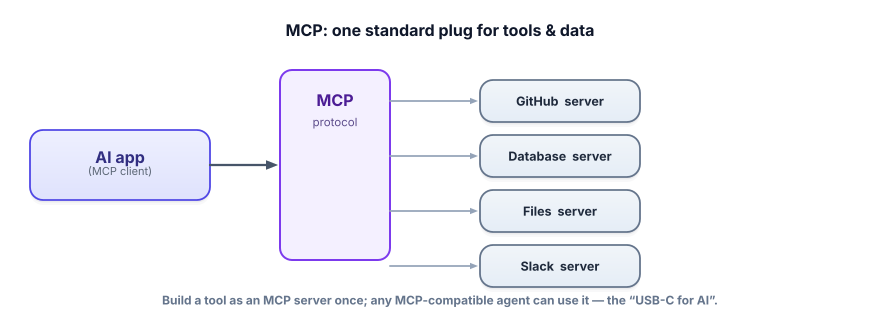

MCP (Model Context Protocol)
Before MCP, every team wired up every tool by hand, in its own way. MCP is the standard plug that fixed it: build a tool or data connector once as an MCP server, and any MCP-compatible agent can use it. It’s become core industry infrastructure — worth understanding well.
The problem MCP solves
You’ve seen tool calling: you describe functions and the model calls them. But every integration was bespoke — each app re-implemented connectors to GitHub, databases, file systems, Slack, in its own format, and none were reusable across apps. It was the pre-USB world of incompatible cables. MCP (Model Context Protocol) is an open standard that defines one way for an AI app to connect to tools and data, so a connector built once works everywhere. Think of it as the “USB-C for AI”: a universal interface between models and the outside world.
MCP launched in late 2024 and has since become an industry standard: it’s supported across major platforms (Anthropic, OpenAI, Google, Microsoft, and many tools like Cursor and VS Code), with thousands of public MCP servers available. In December 2025 it was donated to the Linux Foundation’s Agentic AI Foundation, so it’s no longer any single company’s protocol — it’s shared infrastructure. Learning it is a durable skill, not a vendor bet.

MCP is a client–server protocol. The MCP host/client is the AI application (your agent, or a product like a desktop assistant). An MCP server is a small program that exposes capabilities to clients. Servers offer three kinds of things: tools (functions the model can call, like tool calling), resources (data the model can read, like files or records), and prompts (reusable prompt templates). The client discovers what a server offers and calls it through the standard protocol — so the same agent can talk to any compliant server without custom code.
How it works in practice
An MCP-compatible agent is configured to connect to one or more servers (over a local pipe or HTTP). On connect, it asks each server “what do you offer?” and gets back a list of tools/resources/prompts with their schemas. From then on, those tools appear to the model exactly like the function calls from Lesson 4.2 — the difference is you didn’t hand-code the integration; you pointed at a standard server. Swap in a different server (a Postgres server, a Jira server) and the agent gains those abilities with zero new glue code.
Exposing a tool over MCP with the free Python SDK. Any MCP client (a desktop assistant, an IDE, your own agent) can then discover and call get_weather — no custom integration on their side.
!pip install mcp
from mcp.server.fastmcp import FastMCP
mcp = FastMCP("weather") # name this server
@mcp.tool()
def get_weather(city: str) -> str:
"""Get the current weather for a city.""" # docstring becomes the description
return f"{city}: 18°C, clear"
@mcp.resource("weather://cities")
def supported_cities() -> str:
"""Data the model can read."""
return "Paris, London, Tokyo, Bengaluru"
if __name__ == "__main__":
mcp.run() # now any MCP client can connect and use theseThe type hints and docstrings are the tool schema — MCP generates it. You wrote a normal Python function and got a universally-usable AI tool. That reuse is the entire point: the connector is built once and works in every compatible agent.
- MCP is an open standard for connecting AI apps to tools and data — “USB-C for AI.”
- A client (your agent) connects to servers that expose tools, resources, and prompts.
- Build a connector once as an MCP server; any MCP-compatible agent can use it — no bespoke glue.
- It’s now industry-standard infrastructure (broad platform support, thousands of public servers, Linux Foundation governance).
- To the model, MCP tools look just like Lesson 4.2 tool calls — MCP standardizes the integration, not the model behavior.
Your team has built three different agents, each with its own hand-coded connector to your internal ticketing system. A fourth agent now needs it too. What does MCP change?
1. Map each to tool / resource / prompt: (a) “run a SQL query,” (b) “read this config file,” (c) “a reusable ‘summarize ticket’ template.”
2. Why is an open, governed standard (vs. one vendor’s API) strategically valuable for MCP’s success?
3. Your agent connects to an MCP server you didn’t write, from the public ecosystem. What security questions should you ask first?
▸ Show solutions & reasoning
1. (a) tool — an action the model invokes; (b) resource — data the model reads; (c) prompt — a reusable template the server offers. The three primitives cover “do something,” “read something,” and “use this canned instruction.”
2. A single vendor’s API ties everyone to that vendor and fragments when competitors build their own. An open standard under neutral governance (Linux Foundation) lets every vendor and tool-builder adopt it without lock-in, which is what produced the network effect — thousands of servers and broad client support. Standards win on interoperability; that’s why MCP became infrastructure rather than a feature.
3. Treat a third-party MCP server like any third-party code with access to your data and actions: What permissions/tools does it expose, and could they be destructive? Who runs it and do you trust them? What data does it see, and where does it go? Could a malicious or compromised server return content that manipulates your agent (a supply-chain / prompt-injection risk, Track 7)? Run untrusted servers sandboxed, with least-privilege scopes, and validate their outputs — convenience never excuses skipping the trust check.
MCP’s rise is a classic standards story. Tool calling solved “how does a model invoke a function,” but left “how do apps and tools find and talk to each other” as an N×M integration mess — every app times every tool, each pairing custom. A shared protocol collapses that to N+M: build one server, build one client, and they interoperate.
The result is an ecosystem — thousands of ready-made servers for everything from databases to design tools — that no single company could have built alone. For you as an engineer, it means assembling capable agents increasingly looks like choosing and connecting servers, not writing connectors, and the skill shifts toward orchestration and trust.
But standardized power standardizes risk, too. Connecting your agent to external MCP servers extends its trust boundary to code and data you don’t control: a compromised or malicious server can return content crafted to hijack the agent (prompt injection through tool results), exfiltrate data the agent passes it, or expose dangerous actions.
The discipline mirrors any dependency supply chain: prefer trusted, audited servers; run untrusted ones sandboxed with least-privilege access; scope what each server can see and do; require human approval for high-impact actions; and validate server outputs before the model acts on them. MCP makes wiring an agent to the world trivial — which is exactly why the safety thinking from Track 7 becomes non-optional.
The plug is universal; your judgment about what to plug in is what keeps it safe.
One capable agent is powerful. Sometimes the cleaner design is several specialists coordinated together. Next: multi-agent & orchestration.